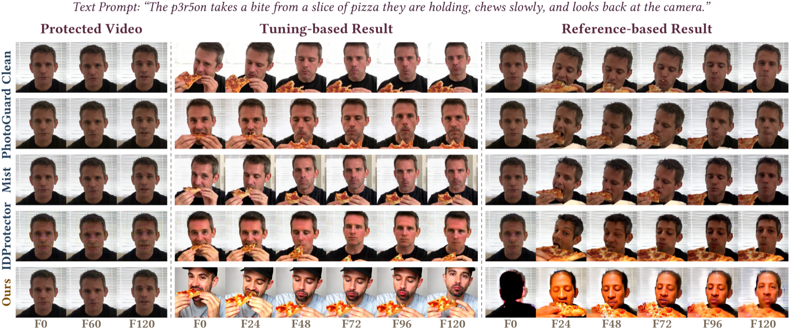

Recent diffusion-based video generation models have enabled high-quality personalized video customization through both tuning-based pipelines, which fine-tune a video diffusion model, and reference-based pipelines such as image-to-video generation. However, these capabilities raise serious concerns about personal privacy, identity ownership and intellectual property protection. Existing anti-diffusion protections focus on the image domain or on reference-based I2V pipelines, leaving the tuning-based video customization unexplored. Protecting videos in this setting raises three challenges: (i) Image-level perturbations, optimized frame by frame, are vulnerable in the video domain. (ii) A perturbation optimized on a single video fails to generalize to other videos or to videos of different length. (iii) Temporally inconsistent perturbations are easily removed by temporal attacks. To address these challenges, we propose Temporally Consistent Universal Adversarial Perturbations (TC-UAP), the first protection method against both reference- and tuning-based video customization. TC-UAP learns a multi-frame universal adversarial perturbation over a set of videos of the same identity, so that a single perturbation can transfer to unseen videos and arbitrary video lengths of that identity. Besides, we further enforce consistency through intrinsic temporal modeling and an extrinsic surrogate temporal-attack loss, ensuring robustness against temporal attacks. Extensive quantitative and qualitative experiments show that TC-UAP degrades identity preservation more than existing baselines under both tuning-based and reference-based video customization, and remains robust under three unseen temporal attacks.
Qualitative comparison under tuning-based and reference-based customization. Given videos protected by different methods, downstream customization with TC-UAP no longer produces faces that resemble the target identity, while image-protection baselines still leak the identity.
